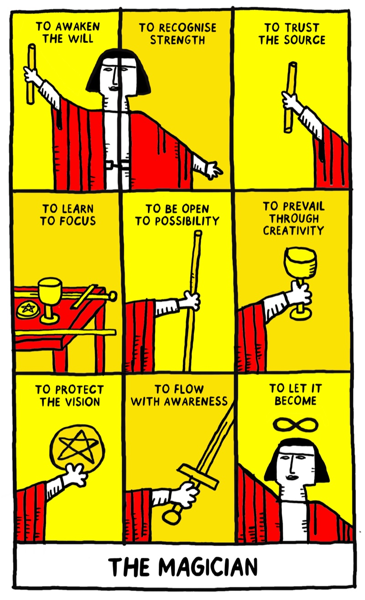
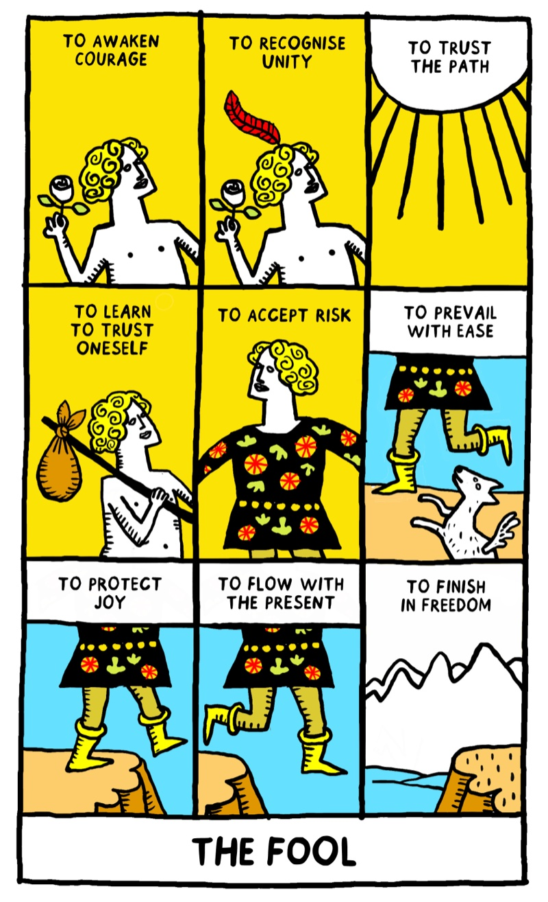
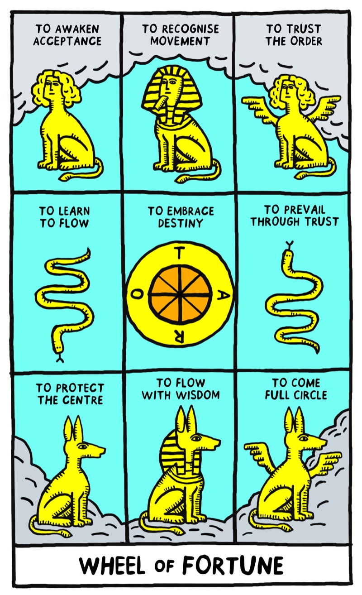
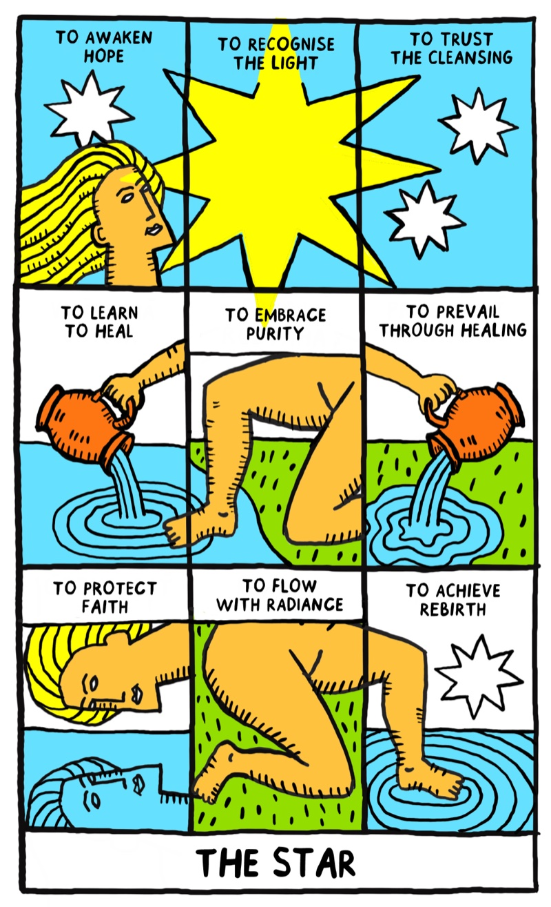
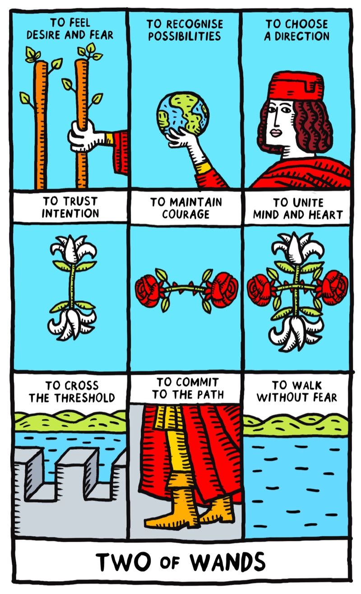
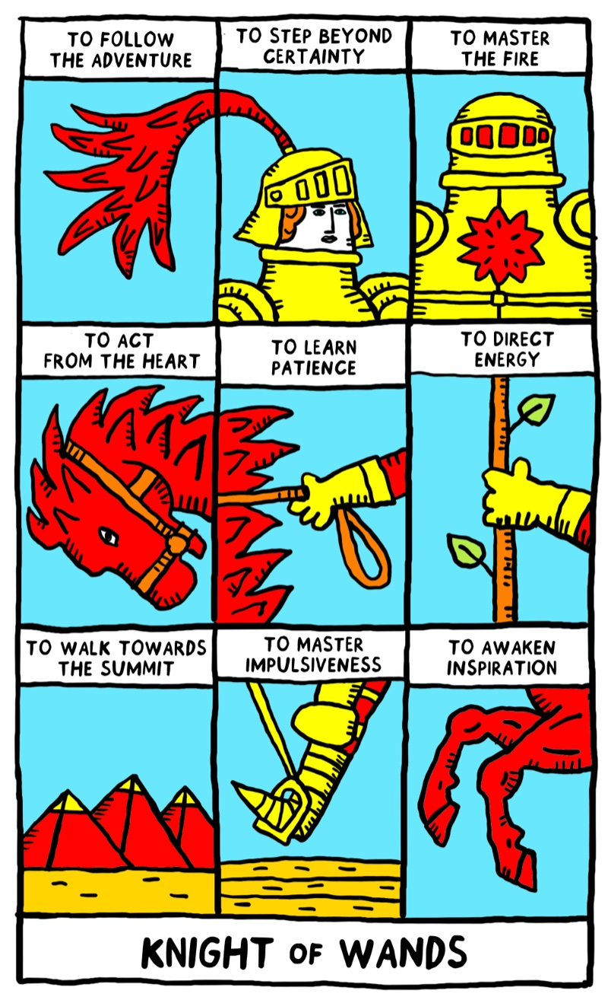
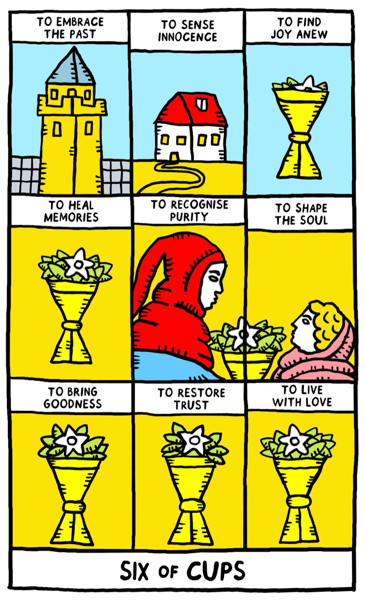
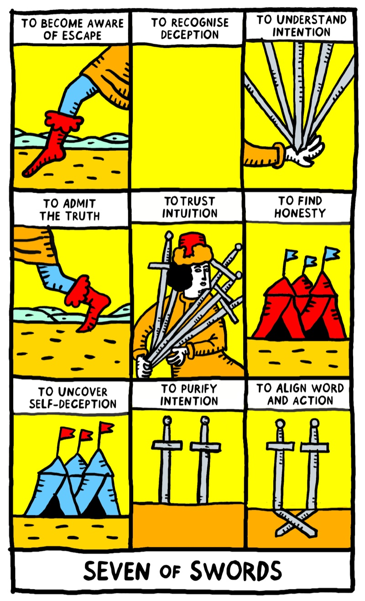
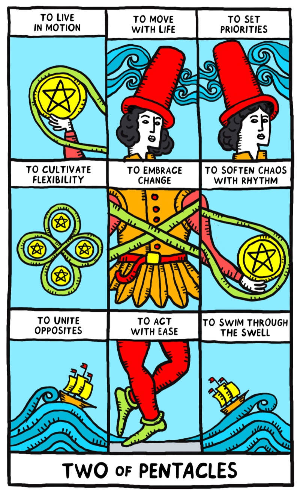
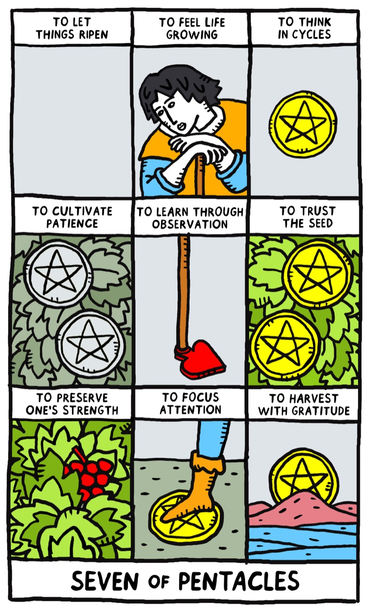

Filenames, the name printed on each card, and the nine captions I transcribed from the artwork. Nothing outside this set is used anywhere on the page.
Matched to the ground-truth preview set (10 of 12)

The Magician wi-major-05.jpg
What to understand
TO AWAKEN THE WILL
TO RECOGNISE STRENGTH
TO TRUST THE SOURCE
What to accept
TO LEARN TO FOCUS
TO BE OPEN TO POSSIBILITY
TO PREVAIL THROUGH CREATIVITY
What to transform
TO PROTECT THE VISION
TO FLOW WITH AWARENESS
TO LET IT BECOME

The Fool wi-major-01.jpg
What to understand
TO AWAKEN COURAGE
TO RECOGNISE UNITY
TO TRUST THE PATH
What to accept
TO LEARN TO TRUST ONESELF
TO ACCEPT RISK
TO PREVAIL WITH EASE
What to transform
TO PROTECT JOY
TO FLOW WITH THE PRESENT
TO FINISH IN FREEDOM

Wheel of Fortune wi-major-02.jpg
What to understand
TO AWAKEN ACCEPTANCE
TO RECOGNISE MOVEMENT
TO TRUST THE ORDER
What to accept
TO LEARN TO FLOW
TO EMBRACE DESTINY
TO PREVAIL THROUGH TRUST
What to transform
TO PROTECT THE CENTRE
TO FLOW WITH WISDOM
TO COME FULL CIRCLE

The Star wi-major-04.jpg
What to understand
TO AWAKEN HOPE
TO RECOGNISE THE LIGHT
TO TRUST THE CLEANSING
What to accept
TO LEARN TO HEAL
TO EMBRACE PURITY
TO PREVAIL THROUGH HEALING
What to transform
TO PROTECT FAITH
TO FLOW WITH RADIANCE
TO ACHIEVE REBIRTH

Two of Wands wi-wands-01.jpg
What to understand
TO FEEL DESIRE AND FEAR
TO RECOGNISE POSSIBILITIES
TO CHOOSE A DIRECTION
What to accept
TO TRUST INTENTION
TO MAINTAIN COURAGE
TO UNITE MIND AND HEART
What to transform
TO CROSS THE THRESHOLD
TO COMMIT TO THE PATH
TO WALK WITHOUT FEAR

Knight of Wands wi-wands-03.jpg
What to understand
TO FOLLOW THE ADVENTURE
TO STEP BEYOND CERTAINTY
TO MASTER THE FIRE
What to accept
TO ACT FROM THE HEART
TO LEARN PATIENCE
TO DIRECT ENERGY
What to transform
TO WALK TOWARDS THE SUMMIT
TO MASTER IMPULSIVENESS
TO AWAKEN INSPIRATION

Six of Cups wi-cups-01.jpg
What to understand
TO EMBRACE THE PAST
TO SENSE INNOCENCE
TO FIND JOY ANEW
What to accept
TO HEAL MEMORIES
TO RECOGNISE PURITY
TO SHAPE THE SOUL
What to transform
TO BRING GOODNESS
TO RESTORE TRUST
TO LIVE WITH LOVE

Seven of Swords wi-swords-03.jpg
What to understand
TO BECOME AWARE OF ESCAPE
TO RECOGNISE DECEPTION
TO UNDERSTAND INTENTION
What to accept
TO ADMIT THE TRUTH
TO TRUST INTUITION
TO FIND HONESTY
What to transform
TO UNCOVER SELF-DECEPTION
TO PURIFY INTENTION
TO ALIGN WORD AND ACTION

Two of Pentacles wi-pentacles-01.jpg
What to understand
TO LIVE IN MOTION
TO MOVE WITH LIFE
TO SET PRIORITIES
What to accept
TO CULTIVATE FLEXIBILITY
TO EMBRACE CHANGE
TO SOFTEN CHAOS WITH RHYTHM
What to transform
TO UNITE OPPOSITES
TO ACT WITH EASE
TO SWIM THROUGH THE SWELL

Seven of Pentacles wi-pentacles-02.jpg
What to understand
TO LET THINGS RIPEN
TO FEEL LIFE GROWING
TO THINK IN CYCLES
What to accept
TO CULTIVATE PATIENCE
TO LEARN THROUGH OBSERVATION
TO TRUST THE SEED
What to transform
TO PRESERVE ONE'S STRENGTH
TO FOCUS ATTENTION
TO HARVEST WITH GRATITUDE
Named in the ground truth but missing as files (2)
The Hermit and The Sun have no image in assets/. Until they arrive the page shows 10 preview cards, or you swap two of the extras below into the set.
Files that exist but are NOT in the preview set (7)
These are on the live page today through the old "Meet the cards" section, which contradicts the ground truth. The rebuild drops them unless you put them in the set.